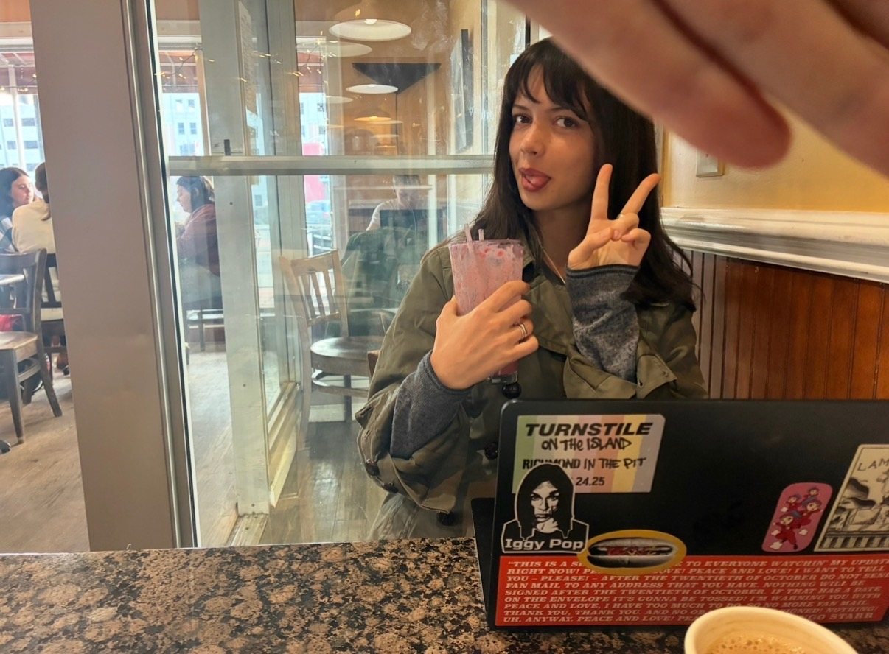

Hey. I'm Morgan Lynch, a 4th year Economics student with a passion for monetary policy reform.
My work
Do You Really Need That?: A Deep Dive into Gen Z's Spending Habits
As an econ major, I am deeply interested in what drives consumer behavior, especially Gen Z consumers. Read my first blog post to learn more about social media influence and other psychological factors that drive impulse spending within our economy.
Read on MediumJust A Trim
'Just A Trim' is a short film that explores themes of identity, existentialism, and the illusion of control within our lives through a helpful haircut tutorial.
Watch on YouTubeAI vs. Human Creativity
Listen to my classmates and I discuss challenges within the creative sphere and answer questions around AI's capacity to takeover the art world.
Listen on SoundCloud